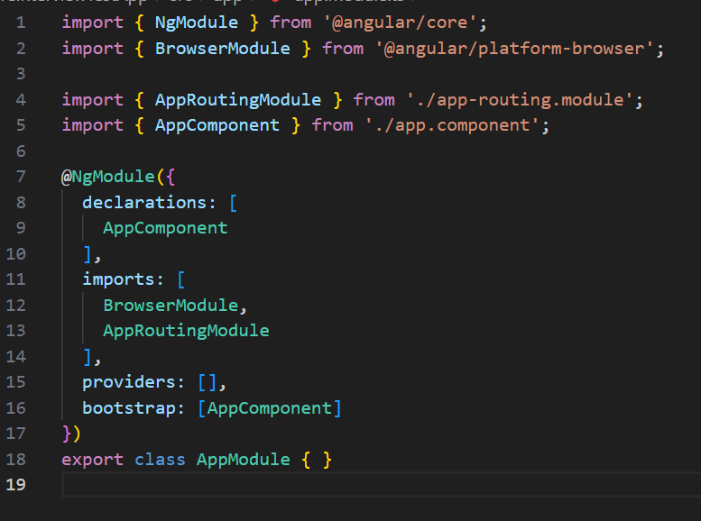

<div class="appQuiz shadowWonder grid container">
    <!-- <div class="col-12 secondaryFontSize flex justify-content-end px-4"> -->
    <span class="appQuiz_right">1 hour 20 Min Left</span>
    <!-- </div> -->

    <div class="appQuiz_ques col-6">
        <div class="flex gap-5 flex-column">
            <label>Consider the following definition of demo module.</label>
            <label class="font-bold">What is the type of forRoot() Static Method?</label>
            
        </div>
    </div>
    <div class="appQuiz_ans col-6 flex gap-5 flex-column">
        <label class="mb-8">SELECT ONLY ONE</label>

        <div class="appQuiz_options px-3 py-1 mb-6 cursor-pointer" *ngFor="let a of [1,2,3,4]">
            <div class="appQuiz_checkCircle"></div>
            <label>
                This is the option
            </label>
        </div>
    </div>
    <div class="col-12 flex justify-content-end gap-3 px-4">
        <app-button [bgcolor]='bgColorSEBtn'><i class="pi textWonder pi-arrow-left"></i></app-button>
        <app-button [bgcolor]='bgColorBtn'>Next<i class="pi pi-arrow-right"></i></app-button>
    </div>

</div>